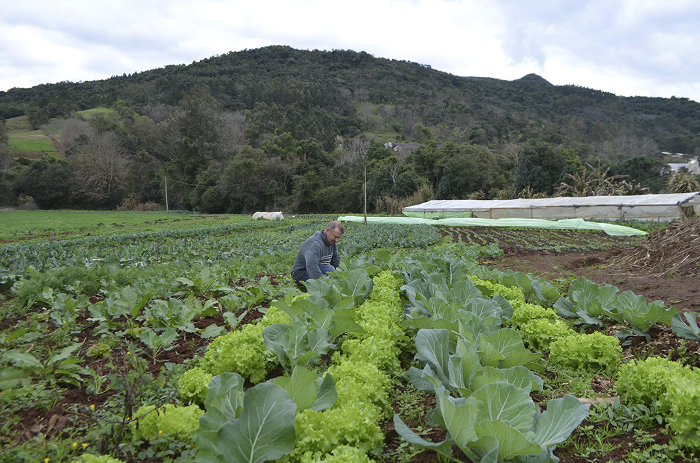
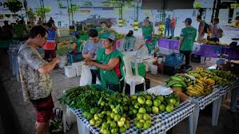
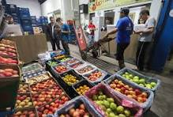

Nossos Valores
Nossos Valores: Cultivando Sustentabilidade e Comunidade Na Cooperativa de Produtos Orgânicos, nossos valores fundamentais estão enraizados na ideia de cultivar um futuro mais sustentável e conectar comunidades através de práticas agrícolas responsáveis e éticas. Acreditamos apaixonadamente em promover um estilo de vida saudável, tanto para as pessoas quanto para o planeta, e isso se reflete em tudo o que fazemos.

1. Sustentabilidade Ambiental:
Comprometemo-nos a preservar e proteger nosso meio ambiente. Cultivamos nossos produtos organicamente, sem o uso de pesticidas ou fertilizantes
sintéticos prejudiciais. Priorizamos práticas agrícolas que regeneram o solo, promovem a biodiversidade e reduzem nosso impacto ambiental. Nosso
objetivo é deixar um legado de terra saudável e fértil para as gerações futuras.

3. Responsabilidade Social:
Acreditamos em construir comunidades fortes e resilientes. Estamos comprometidos em apoiar os agricultores locais, promover práticas de comércio justo
e garantir condições de trabalho justas em toda a nossa cadeia de suprimentos. Além disso, buscamos educar e capacitar nossos membros e clientes sobre
os benefícios da agricultura orgânica e o impacto positivo que ela tem em nossa saúde e no meio ambiente.

Na Cooperativa de Produtos Orgânicos, não estamos apenas cultivando alimentos saudáveis, estamos cultivando um movimento. Um movimento em direção a um
mundo mais verde, mais justo e mais harmonioso. Junte-se a nós nesta jornada para uma vida melhor, para nós e para as próximas gerações.